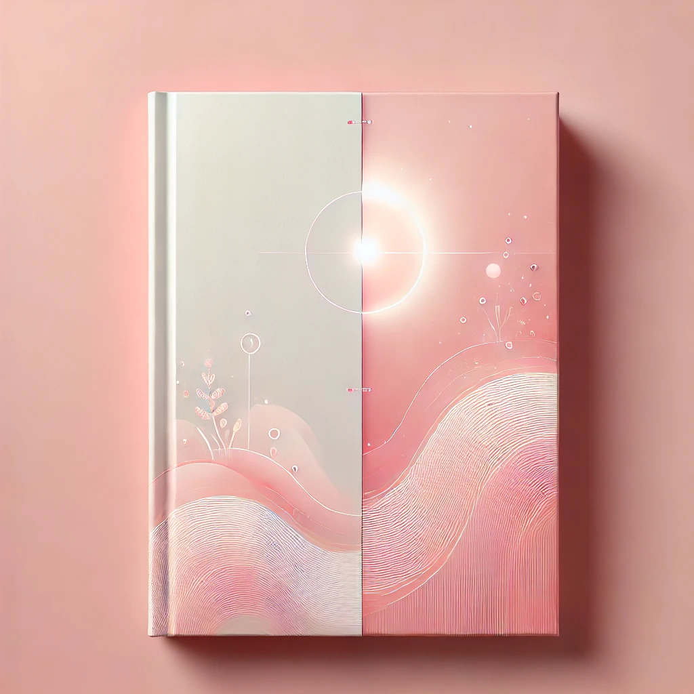

小説3
投稿日: 2024年11月03日
1.自分一人で生きていると思い込んでいると、自分以外の人間がクズに思えてくる。殺すにも値しないクズ。結局、殺せるのは自分しかいない。
2.仲睦まじく手を取り合って散歩する老夫婦も、どこかに闇を抱えている―少なくともどちらかが―そんな風にしか思えない私はこの世から夫をどうやって抹殺するか考えていた。
3.子供が成人するまでただがむしゃらに働くような親がいたとしたら、その子が自分の城を出て行った時、第二の人生は始まるのだろうか。
第一章 第二章 第三章(作成中)